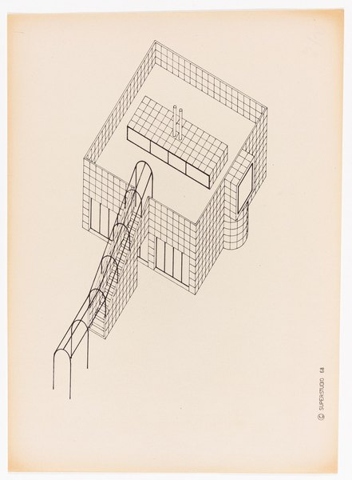
CRVI003344Superstudio - Untitled

CRVI002227László Moholy-Nagy - Untitled
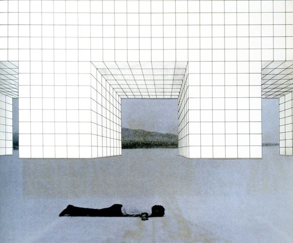
CRVI003335Superstudio - Untitled

CRVI002416Filippo Tommaso Marinetti - Vive la France
1914-15
1914-15

CRVI001971Lorna Simpson - Collage with ink-wash hair

CRVI002414Filippo Tommaso Marinetti - Zang Tumb Tuuum
1915
1915

CRVI001501Gustav Klutsis - Dynamic City
1919
1919
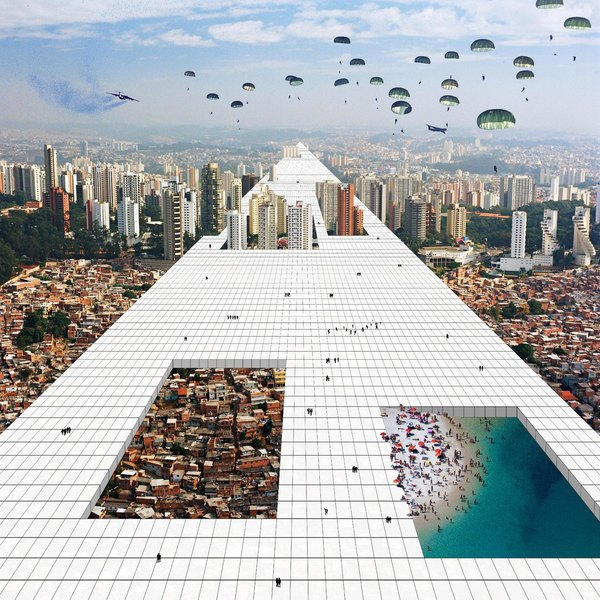
CRVI003339Superstudio - Untitled
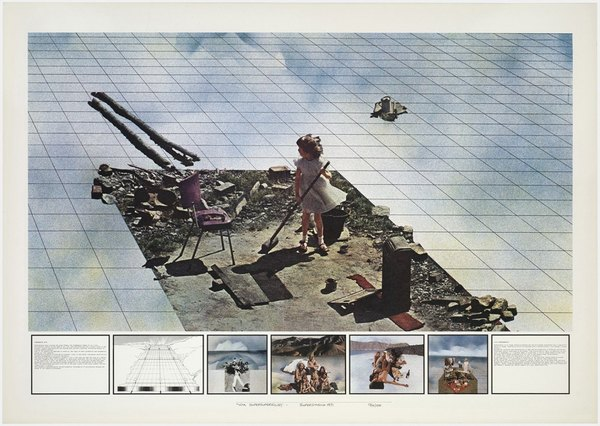
CRVI003337Superstudio - Untitled

CRVI002420Gustav Klutsis - Electrification of the Entire Country (Elektrifikatsiia vsei strany)
1920
1920
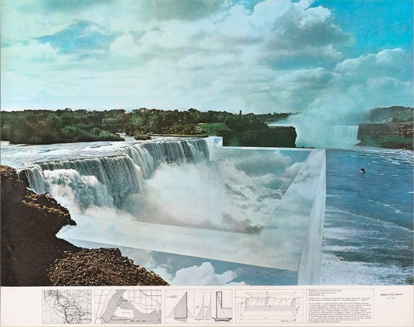
CRVI003334Superstudio - Untitled
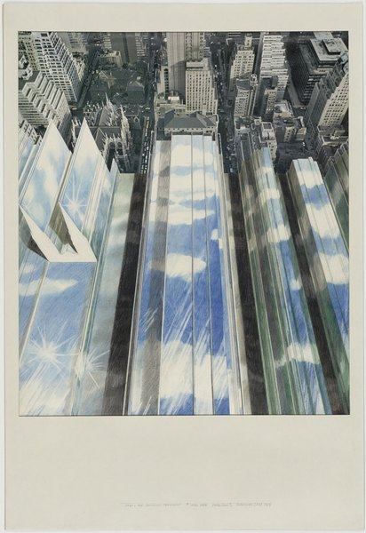
CRVI003346Superstudio - Untitled

CRVI002652Genpei Akasegawa - Untitled (collage with a bus and a shoreline)

CRVI002224László Moholy-Nagy - Human Mechanics

CRVI002137Martha Rosler - Photo Op, from House Beautiful: Bringing the War Home
c. 2004–2008
c. 2004–2008

CRVI001485Hannah Höch - Photomontage with a child and the letter P

CRVI001806James Rosenquist - Source for President Elect
1961
1961
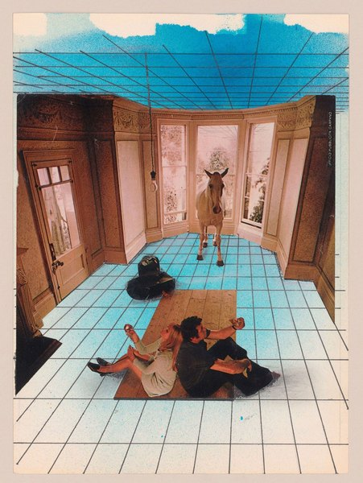
CRVI003350Superstudio - Untitled

CRVI001812Richard Hamilton - Just what is it that makes today's homes so different, so appealing?
1956
1956

CRVI001488Unknown - Dada photomontage naming Raoul Hausmann

CRVI001483Hannah Höch - Collage of eyes in a vase

CRVI001484Hannah Höch - Photomontage with a man holding a white cat
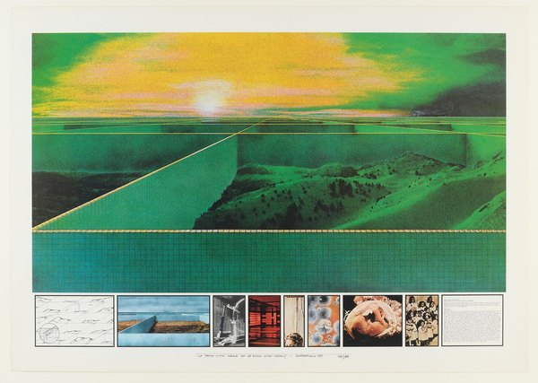
CRVI003351Superstudio - Untitled

CRVI001815Eduardo Paolozzi - Sack-o-Sauce
1948
1948
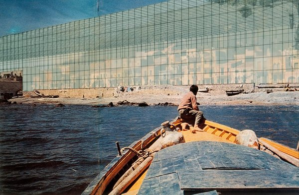
CRVI003347Superstudio - Untitled

CRVI001997Wangechi Mutu - Figure on a map ground
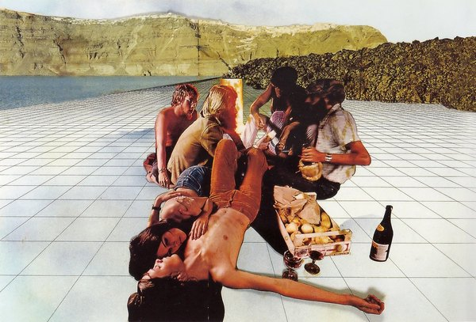
CRVI003349Superstudio - Untitled
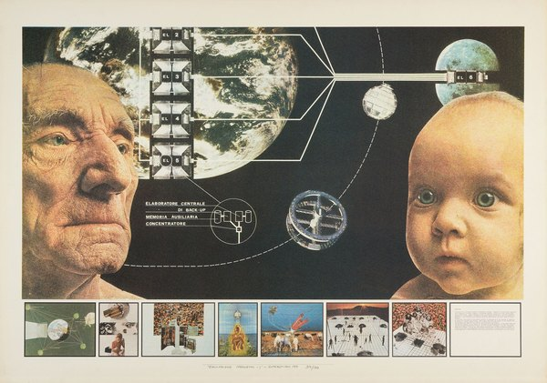
CRVI003352Superstudio - Untitled
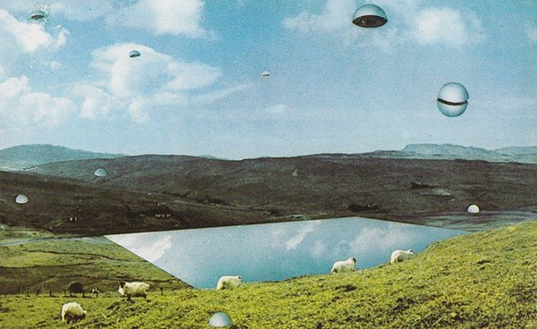
CRVI003340Superstudio - Untitled
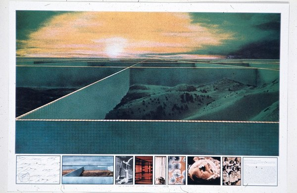
CRVI003341Superstudio - Untitled
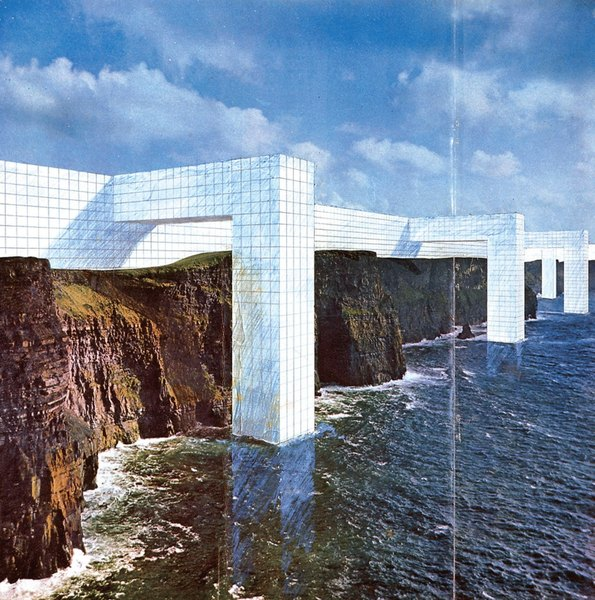
CRVI003338Superstudio - Untitled
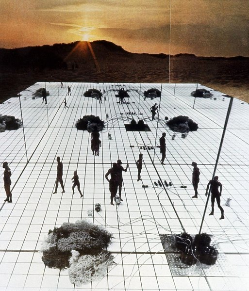
CRVI003333Superstudio - Untitled
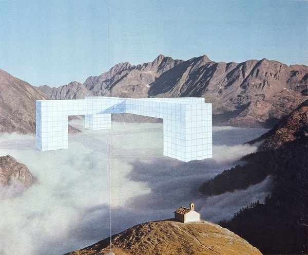
CRVI003345Superstudio - Untitled
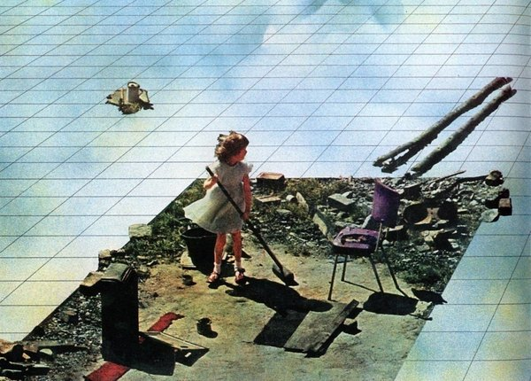
CRVI003348Superstudio - Untitled

CRVI001970Unknown - Figure with ink-wash hair

CRVI003275Ron Herron - Walking City on the Ocean, project (Exterior perspective)
1966
1966
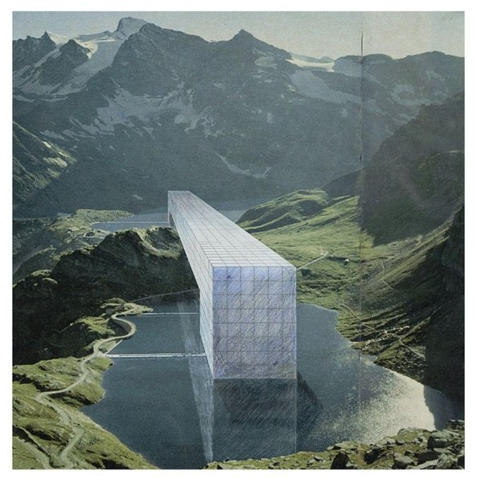
CRVI003342Superstudio - Untitled
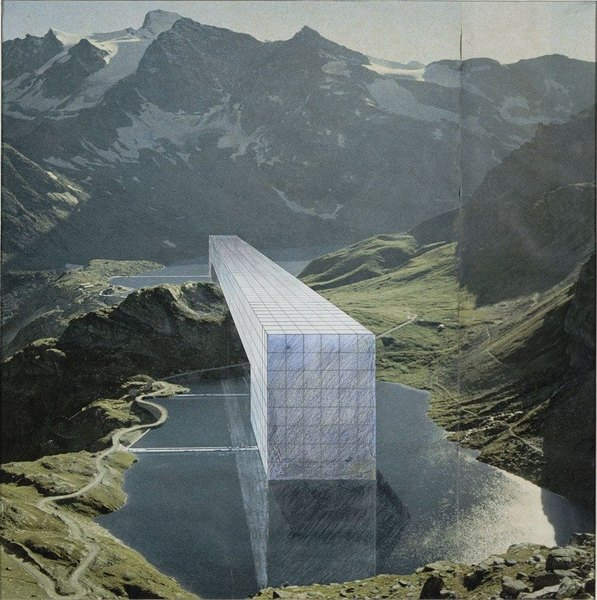
CRVI003336Superstudio - Untitled